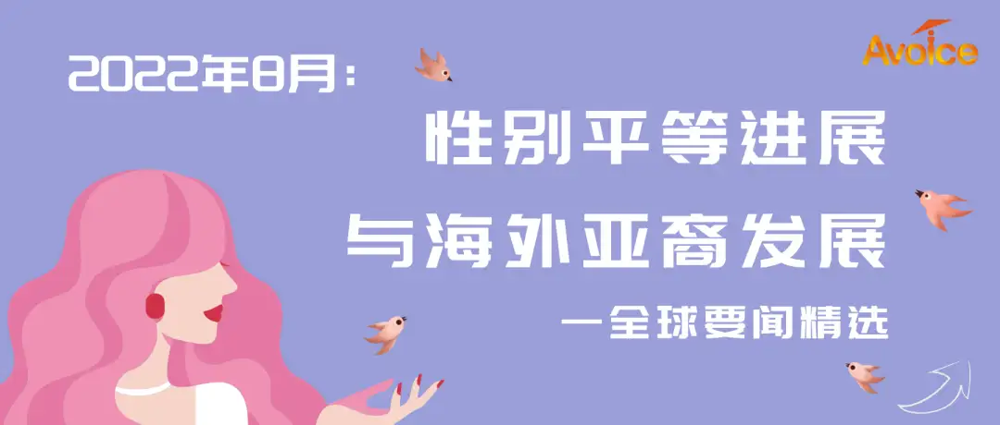

引言：
Avoice观察月刊聚焦每月发生的性别平等进展与海外亚裔发展的全球要闻，通过精选和分享，撬动更为广阔的思考空间，从确定“是什么”至思考“为什么”，在寻求实现性别平等的解决办法之前，与大家共同探索发现真正影响性别平等的问题。
00
本文目录
一、性别议题
疫情下数字时代进程中的性别差距
西班牙通过法律强调无“性同意”的性行为属于性侵犯
二、针对亚裔犯罪
美国旧金山市里士满区在同一天内报告了两起袭击事件
一名男子在时代广场用美工刀袭击了一名妇女
美国明尼苏达州圣保罗警方接到了一起明显的谋杀-自杀案件
三、亚裔话语权
伊利诺伊州对公立学校讲授亚裔美国人的历史的要求开始实行
亚裔居民起诉加州县，声称官员进行有针对性的骚扰活动
01
# 性别议题
News
疫情下
数字时代进程中的性别差距
联合国妇女署表示，自疫情以来，数字经济已成为世界经济的关键力量。数字经济的灵活工作方式，让人们有了更多元的就业途径。但同时，在数字经济和科技领域，女性的参与度和话语权依然受限。
数据表明，全球人工智能岗位从业者仅10%为女性，全球通讯技术领域学者中，仅有29.2%为女性。在接受教育环节，在中等和高等教育中参与科技相关领域学习的女性数量不足，是造成女性在数字话进程中面临结构性困境的重要原因。针对这种差距，于今年7月21日，联合国妇女署联同蚂蚁基金会开启“她向未来“计划，旨在缩小数字时代的性别差距，为女性中小微企业主在数字时代发展业务，致力于打破数字化参与不平等导致的性别不平等。
相关链接：
联合国妇女署. “数据解读: 疫情与数字化进程中的女性.” 微信公众平台. Accessed August 28, 2022
https://mp.weixin.qq.com/s/PJ8OvN2yAs8czZfZzVX5uA.
News
西班牙通过法律强调
无“性同意”的性行为属于性侵犯
8月25日，西班牙议会将“性同意”纳入考量性侵犯行为标准。这意味着在任何情况下，如果没有当事人的许可，任何强行发生的性行为都将被属于性侵犯。西班牙平等部长艾琳·蒙特罗(Irene Montero)周四表示，“女权主义的呼吁 - 只有性同意才算作真正的同意 - 终于成为了我们国家的法律。” 尽管“性同意”的含义还在等待进一步阐明，这一法案的通过标志着西班牙针对性别暴力以及推动性别平等的重要进步。
相关链接：
Bubola, Emma, and José Bautista. “Spain Passes Law Requiring 'Freely Expressed' Consent for Sex.” The New York Times. The New York Times, August 25, 2022
https://www.nytimes.com/2022/08/25/world/europe/spain-rape-consent-law.html.
02
# 针对亚裔犯罪
News
美国旧金山市里士满区
在同一天内报告了两起袭击事件
据美国全国广播公司海湾地区（NBC BAY AREA） 8月12日报道，10日，美国旧金山市里士满区在同一天内报告了两起袭击事件。
监控视频显示，一名身穿黑色连帽衫的男子在吉里街向东行走时，与一名华裔女子对视。接着，该男子转身跑向该女子，将她撞倒在地并一拳打在她的脸上。女子撞到停在旁边的车辆，触发了汽车警报。该男子随即落荒而逃。据目击者称，该受伤女子系一名65岁的亚裔女性，男子的攻击导致她嘴唇流血，牙齿流血，眼镜受损。
令人唏嘘的是，这是该男子的第二次袭击，他的第一次袭击发生在几分钟前。监控显示，他在过马路时殴打了另一位女性，并且受害人也是亚裔。
旧金山的里士满区被认为是该市最安全和安静的地区之一，但它现在已成为该地区亚裔社区最近两次袭击的现场。旧金山警察局表示，此案的犯罪嫌疑人尚未被逮捕。该区附近的居民也表现出恐慌的情绪。
相关链接：
Saab, G. (2022, August 13). Videos show man attacking women minutes apart in San Francisco's Richmond District. Retrieved August 17, 2022
https://www.nbcbayarea.com/news/local/asian-attacks-san-francisco/2976279/
News
一名男子在时代广场
用美工刀袭击了一名妇女
据美国NBC于8月3日报道，一名 30 岁的男子在时代广场用美工刀袭击了一名妇女。受害者系一名 59 岁的亚裔女性，职业为裁缝，但在这次攻击中，她的右手被严重割伤。在受到袭击后，她被送往当地医院救治，现已出院。
纽约警察局称，这是一次无端袭击，犯罪嫌疑人安东尼·埃文斯已于8月2日被捕，并被指控犯有仇恨罪。
根据仇恨和极端主义研究中心于今年早些时候发布的“仇恨犯罪数据分析” ，去年反亚裔仇恨犯罪比前一年增加了339%。警方称，在上个月，一男子在皇后区长岛市用头撞了一名 27 岁的男性受害者，同时发表了反亚裔言论。大约在同一时间，一名亚裔女性被要求“滚出这个国家”。
相关链接：
Man charged with hate crime for attacking Asian woman with Box Cutter in New York City, police say. (2022, August 03). Retrieved August 17, 2022
https://www.nbcnews.com/news/us-news/man-charged-hate-crime-attacking-asian-woman-box-cutter-new-york-city-rcna41267
Woods, A., Celona, L., & Schnitzer, K. (2022, August 02). Suspect in NYC box-cutter attack on Asian woman charged with hate crime. Retrieved August 17, 2022
https://nypost.com/2022/08/02/times-square-daylight-slashing-suspect-identified/
News
美国明尼苏达州圣保罗警方
接到了一起明显的谋杀-自杀案件
8月16日晚上，美国明尼苏达州圣保罗警方接到了一名儿童的报警，他声称自己的父亲和母亲被杀身亡。21 点 15 分，警员前往事发地点，医护人员在现场宣布夫妻二人当场死亡。
圣保罗警察局表示，该案件是一起明显的谋杀-自杀案件。33岁的男子Yia Xiong 先是开枪打死了他的妻子Ka Lor，随后又开枪自杀。夫妻二人都是亚裔苗族人，他们交往了大约10年，并且育有5个孩子。在案件发生之前，他们的亲友没有发现任何异样状况，圣保罗警方也没有有关这对夫妻的家庭暴力记录。
妇女农村倡导计划（The WoMen's Rural Advocacy Program）称，Lor 是 2022 年在明尼苏达州被亲密伴侣杀害的第 14 人。苗族 18 理事会（Hmong 18 Council）主席 Paul Xiong 表示，这是今年夏天在该地区发生的第二起涉及苗族家庭的谋杀-自杀案件。当地组织“Transforming Generations”正在苗族社区开展工作，以干预和预防可能的家庭危机。
相关链接：
Uren, A. (2022, August 18). Family's tributes to mother killed by partner in St. Paul Murder-Suicide. Retrieved August 22, 2022
https://bringmethenews.com/minnesota-news/familys-tributes-to-mother-killed-by-partner-in-st-paul-murder-suicide
Belcamino, K. (2022, August 19). Family asks for community support for 5 children orphaned after St. Paul Murder-Suicide. Retrieved August 22, 2022
https://www.twincities.com/2022/08/18/family-st-paul-murder-suicide-children-gofundme/
03
# 亚裔话语权
News
伊利诺伊州对公立学校讲授
亚裔美国人的历史的要求开始实行
根据世界之窗（WTTW）8月22日报道，伊利诺伊州规定，从本学年开始，该州的每一所公立小学和高中都必须包括一个关于亚裔美国人历史的教学单元。
在去年夏天，伊利诺伊州州长普利茨克（J.B.Pritzker）签署了《亚裔美国人历史教学公平法》（Teaching Equitable Asian American Community History Act, or TEAACH），伊利诺伊州成为第一个实施这一要求的州。
“我们需要教给学生美国诚实的历史，展示亚裔美国人不仅是受害者，而且是他们自己社区的正义捍卫者，并与其他社区团结一致，”Grace Pai说，他是芝加哥亚裔美国人推进正义的执行董事。
该组织正在为伊利诺伊州的教育工作者举办免费发展研讨会，为他们讲授亚裔美国历史做准备。Pai说，伊利诺伊州教育委员会将对所有学校进行调查，并在其年度调查的头三年中执行这项任务。由于州委员会的职权范围有限，她希望学生、家长、教师和社区成员能够主动询问他们的学校和地区将如何执行《教学法》。
芝加哥北格兰德高中的英语老师Mueze Bawany说，他计划通过在教学大纲中增加一个图画小说单元和一个诗歌单元来贯彻新的教育要求。
相关链接：
Asian American History Requirement Starts in Illinois Public Schools, Eunice Alpasan ,August 22, 2022
https://news.wttw.com/2022/08/22/asian-american-history-requirement-starts-illinois-public-schools
News
亚裔居民起诉加州县，
声称官员进行有针对性的骚扰活动
根据NBC于8月6日的报道，北加州正因为一场诉讼进行一场种族主义运动。
周三在联邦法院提起的集体诉讼将 Siskiyou 县和警长 Jeremiah LaRue 列为被告，并声称双方都对苗族居民进行了大规模骚扰。
美国公民自由联盟（American Civil Liberties Union）和亚裔美国人推进正义联盟（Asian American Advancing Justice）提出的诉讼称：“这一目标旨在驱除该县不受欢迎的少数族裔，其根源在于 1800 年代锡斯基尤的反亚裔种族主义。”
据当地居民称，这种歧视的形式包括例行的交通拦截、限制用水和旨在将亚洲人赶出土地的留置权。投诉还称，该县执行的政策对苗族大麻农民的影响尤为严重。
诉讼指出，尽管亚洲人仅占该县成年人口的 2.4%，但在 2021 年，他们占治安部交通拦截的 28% 以上。根据NBC报告给出的数据，全县人口接近 45,000 人，其中约 85% 为白人。
去年提起的另一起诉讼导致该县因涉嫌专门针对他们实施限水令而发出禁令，但县官员否认了这些指控。
虽然在加利福尼亚种植大麻是合法的，但自从苗族人口开始种植大麻以来，该县就对大麻农场实施了更严厉的监管，可以说新法律几乎完全在以亚洲人为主的地区执行。当该县颁布了一项新法令，禁止在没有许可证的情况下运输超过 100 加仑的水时，他们只在亚裔美国人社区周围的道路上进行了监管。虽然它的目的是针对大麻种植者，但诉讼称非种植者的苗族居民也受到更多的拦截。这对苗族居民的日常生活产生了影响，他们说他们很难获得水来满足基本需求。
苗族原告说，他们完全被当作局外人对待。 “在一个引人注目的例子中，董事会在 2015 年的一次公开会议上挑选了苗族与会者，首先要求'苗族居民'就提出的问题举手，然后要求'那些在场的县居民'投票，就好像苗族人是局外人一样，”诉讼中这样写道。
相关链接：
Asian American residents sue Calif. county, claiming targeted harassment campaign by officials, Sakshi Venkatraman, August 6, 2022
https://www.nbcnews.com/news/asian-america/asian-american-residents-sue-calif-county-claiming-targeted-harassment-rcna41597
撰文 I 李见鋆 刘紫绮 胡天依
图片 I 新闻原文
排版、封面 I 荆艺 戴翰林
审校 I 庞海尘